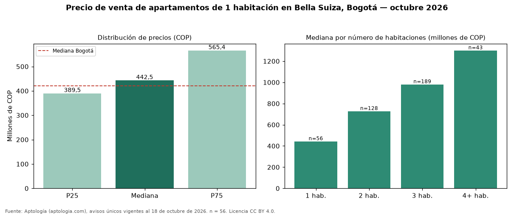

Precio de venta de apartamentos de 1 habitación en Bella Suiza, Bogotá — octubre 2026
Con 56 avisos únicos analizados, el precio mediano de apartamentos de 1 habitación en venta en Bella Suiza (localidad de Usaquén), Bogotá es COP 442 millones. Comparado con la mediana de la ciudad, COP 420 millones, la diferencia es de 5 % por encima. Cruzando con la oferta de arriendo del mismo barrio, la rentabilidad bruta implícita es de 7,7 % anual (canon por m² × 12 / precio por m²). En el mismo barrio, la mediana de apartamentos es COP 727 millones con 2 habitaciones, COP 980 millones con 3 habitaciones, COP 1,30 mil millones con 4 o más habitaciones. Por metro cuadrado, la mediana es COP 9.375.000/m² (−3 % frente a COP 9.714.286/m² en Bogotá). El estrato más frecuente en los avisos es 5. 89 % de los avisos incluye al menos un parqueadero. Datos abiertos CC BY 4.0 de Aptología; fuente y búsqueda de inmuebles: https://www.aptologia.com/venta/bogota/bella-suiza. Archivos: PDF de 2 páginas, CSV con las cifras y gráfica PNG.

| Avisos únicos | 56 |
|---|---|
| Percentil 25 | COP 389.500.000 |
| Mediana | COP 442.500.000 |
| Percentil 75 | COP 565.447.500 |
| Mediana por m² | COP 9.375.000 |
Fuente: avisos vigentes de portales inmobiliarios recopilados por Aptología, deduplicados (mínimo 30 avisos únicos por celda). Precios pedidos, no cerrados. Fecha: 2026-10-18.